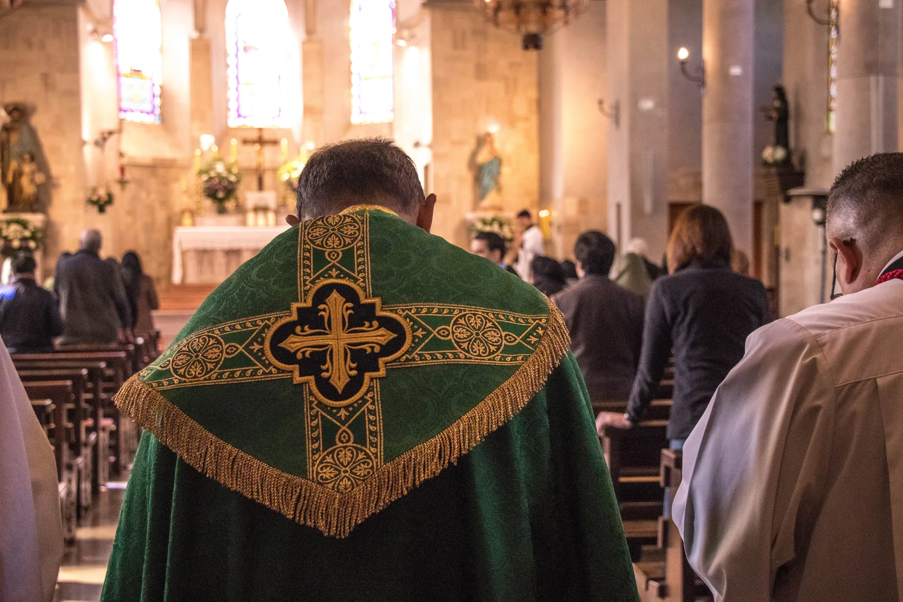

Marcelo Villagra
El lugar cambia según la fecha. Comuníquese con el Sr. Villagra para saber dónde se celebrará la próxima Misa y confirmar el horario.
+56 9 8231 2511La Misa en Temuco no se celebra en una dirección fija: el lugar cambia según la fecha. Consulte con Marcelo Villagra dónde tendrá lugar la próxima celebración.

El lugar cambia según la fecha. Comuníquese con el Sr. Villagra para saber dónde se celebrará la próxima Misa y confirmar el horario.
+56 9 8231 2511Las fechas de visita se publican en el calendario semanal. La dirección se confirma con el contacto local.
Ver el calendario semanalLa celebración cambia de lugar. Confirme la dirección y la fecha con Marcelo antes de trasladarse.
Consulte las direcciones de Santiago, Viña del Mar y La Serena.
Ver todos los centros